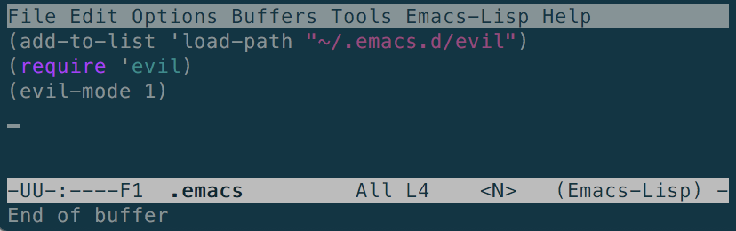
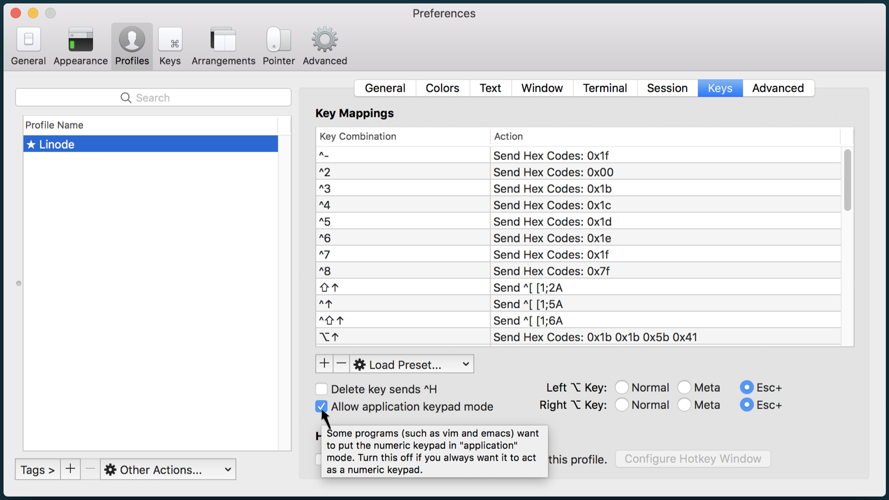

How to Navigate Emacs using Evil Mode
Updated by Linode Written by Edward Angert
A Vi/m Layer Makes Emacs Evil
Emacs is an endlessly versatile text editor. Every aspect can be customized, and new features can be added both globally and within specific modes.
Emacs Evil mode is an extensible Vi layer for Emacs. It adds a set of Vi(m) key bindings and features to Emacs to give it a more modal feel, and lets you rely less on the pinky-accessed CTRL key when manipulating text. Where Emacs uses more key combinations and commands, Evil mode brings Vi’s operators and motions to execute text operations.
This guide shows how to get started with Emacs Evil mode and is not a comprehensive guide on how to use Emacs or Vi.
Why Use Emacs Evil?
On its own, Emacs is an excellent text editor with an extraordinary list of available tools and plugins like a calendar, Org Mode, chess, and Tetris.
Emacs users value the editor’s ability to be everything they need for a full day of work, without ever needing to leave Emacs or touch a mouse. Any repetitive function can be simplified by writing a function in elisp.
Evil mode expands on Emacs by adding the modes, motion, and text manipulation features of Vi. Once Evil is installed and enabled, the default Normal state allows you to navigate Emacs like in Vi, moving back and forth between words with b and w or to the first word of the next sentence with ). Evil adds Vi’s Visual and Insert modes as well as additional, uniquely Evil modes.
Install Emacs Evil
Install Emacs and Git if they aren’t already:
sudo apt update && sudo apt install emacs gitClone the
emacs-evilrepository into its own directory:git clone https://github.com/emacs-evil/evil ~/.emacs.d/evilEdit the Emacs initialization file to add the Evil plugin and load it when Emacs starts:
emacs ~/.emacs.d/init.el- ~/.emacs.d/init.el
-
1 2 3(add-to-list 'load-path "~/.emacs.d/evil") (require 'evil) (evil-mode 1)
Save the file and reload the buffer to load the plugin:
C-x S, M-x eval-bufferThe
<N>tag in the status bar shows that Emacs is now in Evil’s Normal state:
Kill the buffer with:
C-x k.
Get Started with Evil Mode
Evil States
Now that Evil is active, Emacs starts in Normal state. Navigate the way you would in Vi.
Since modes refer to a different function in Emacs, Evil calls its different modes states. The available states and how to reach them from the default Normal state are:
- Emacs:
<E>- Enter state with CTRL-z
- Navigate as you normally would in Emacs.
- CTRL-z or
M-x evil-normal-stateto return to Normal.
- Insert:
I- Enter state with
i. - Edit and modify text.
- ESC to return to Normal.
- Enter state with
- Motion:
<M>- Enter state with
:evil-motion-state. - Navigate the file with Vi keys, without risk of modifying the contents.
- Enter state with
- Normal Vi:
<N>- Emacs Evil starts in Normal state by default.
- Vi bindings and operators.
- Operator-Pending:
<O>- Enter state with
:evil-operator-state. - Rewrite operator-pending mappings to fit your needs.
- ESC to return to Normal.
- Enter state with
- Replace:
<R>- Enter state with
R. - Overwrite text.
- ESC to return to Normal.
- Enter state with
- Visual:
<V>- Enter state with:
*
vfor characterwise. *Vfor linewise. * CTRL-V for blockwise. - Visually select text.
- ESC to return to Normal
- Enter state with:
*
Change the Default Emacs Evil Start State
To force Emacs to start in another state, add evil-default-state to .emacs:
- ~/.emacs.d/init.el
-
1(setq evil-default-state 'emacs) ;; changes default state to emacs
Use Emacs and Vim Together
Vi has a number of keyboard shortcuts that help speed frequent operations:
ZZto save and quit;QZdon’t save, just quit,
Operations in Vi are often commands strung together to take the form of a sentence.
These operations take the syntax: operator + motion + object
For example, CI" will delete everything inside the next set of quotation marks and enter insert mode.
Practice combining some Emacs and Vi by splitting a paragraph into one sentence per line. Use a paragraph from the beginning of this guide as an example:
Emacs Evil mode is an extensible Vi layer for Emacs. It adds a set of Vi(m) key bindings and features to Emacs which gives it a more modal feel, and lets you rely less on the pinky-accessed CTRL key when manipulating text. Where Emacs uses more key combinations and commands, Evil mode brings Vim's operators and motions to execute text operations.
Type
M-hto highlight the paragraph under the pointerUse
:to bring up the command-line.The command-line functions similarly to Emacs’s
M-x, and allows you to enter a combination of operations to execute. In this example, substitute each instance of a.(period, space) with a.⏎(period, return symbol)::s/\. /.\n/g
Fix iTerm and macOS Meta Keybinding Issues
If the Meta key acts inconsistently in iTerm, enable Allow application keypad mode in the Profiles tab of iTerm preferences. This screenshot shows both left and right Alt keys set to Esc+:

Fix Emacs Evil and Special Mode Key Binding Conflicts
Because Emacs has a variety of special modes with their own key bindings (like Org Mode and Calendar), some may conflict with Emacs Evil. For example, q exits most Emacs special modes, but records macros in Vi. Install the Evil Collection to apply a consistent set of bindings across modes.
Integrate Emacs Evil with Org Mode
Install org-evil for more useful key binding integrations with Evil and Org Mode.
More Information
You may wish to consult the following resources for additional information on this topic. While these are provided in the hope that they will be useful, please note that we cannot vouch for the accuracy or timeliness of externally hosted materials.
Join our Community
Find answers, ask questions, and help others.
This guide is published under a CC BY-ND 4.0 license.